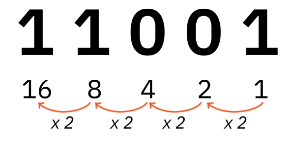

Ontdek kleurmodellen! Pixels vormen de bouwstenen van digitale beelden. RGB (rood, groen, blauw) geeft leven aan schermen, terwijl YMC (geel, magenta, cyaan) perfect is voor drukwerk. Duik in de wereld van kleuren en maak beelden sprankelend!
Ontdek het binaire stelsel! Met slechts 0's en 1's vormt het de basis van digitale technologie. ASCII zet deze cijfers om naar letters, zodat computers met ons kunnen communiceren. Klik hier en ontdek hoe dit systeem onze wereld verandert!
Verken het geheim van compressie! Of het nu gaat om afbeeldingen of geluidsfragmenten, compressie verkleint bestanden zonder veel kwaliteit te verliezen. Dit bespaart ruimte en versnelt downloads. Klik hier en ontdek hoe compressie de digitale wereld efficiënter maakt!
Ontdek bitmap- en vectorafbeeldingen! Bitmapafbeeldingen bestaan uit pixels en zijn ideaal voor foto's, terwijl vectorafbeeldingen werken met lijnen en vormen, perfect voor logo's en illustraties. Elk type heeft zijn eigen kracht. Klik hier en leer hoe ze de digitale wereld vormen!
Genoeg gehad van onze eigen site? Check ook sites uit mijn klas! Dezelfde onderwerpen maar ook dezelfde fun. Klik hier beneden om meer dan 5 sites te ontdekken!
De homepagina van deze site, dé plek waar je van alles en nog wat over mij te weten komt. Ontdek waar ik werk, waar ik op school zit en wat er zo uniek aan mij is.
Het binair stelsel bestaat uit nullen en eenen (0 & 1). Elk getal noemen we een bit, 8 bits vormt een byte.
Dit plaatje geeft goed weer wat het binair stelsel nou eigenlijk is. We beginnen bij het begin:
Met het binair stelsel kan je tellen (daarom wordt het ookwel het binair talstelsel genoemd). Dit gaat heel gemakkelijk. een 1 betekent dat je het getal WEL meetelt. Een 0 betkent dat je het getal NIET meetelt.
Je telt van rechts naar links, dus tegen de leesrichting in. Het eerste getal, dat helemaal rechts staat, is een 1, daarna wordt het een 2, dan een 4 etc. Ditkan je ook zien in het plaatje. Dit loopt helemaal tot 16, 5 bits dus.
Stel je voor: je wilt het getal 11001 tellen, dan begin je rechts bij de 1, deze telt wel mee en is een 1. Daarna doe je een stap naar links, dat is een 0, deze tel je dus niet mee, dit zou normaal een 2 zijn (1*2). Daarna heb je weer een 0, deze tel je niet mee, normaal zou dit een 4 zijn (1*2*2) Dan heb je weer een 1, deze tel je mee en wordt een 8 (1*2*2*2) als laatste hebben we weer een 1, dit wordt 16. Nu kun je alles bij elkaar optellen: 1+8+16=25.
Van deze 25 kunnen we ook een letter maken, dit doen we met ASCII (American Standard Code for Information Interchange). De standaard ASCII-tabel bestaat uit de 94 zichtbare tekens (hoofdletters en kleine letters, cijfers, leestekens en enkele andere symbolen), de spatie, en 33 stuurcodes. De stuurcodes representeren geen zichtbare tekens, maar zijn opdrachten aan uitvoerapparaten of geven informatie over de gegevens die verstuurd worden.